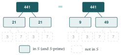

The set \(S\) consists of all the positive integers that leave a remainder of \(1\) upon division by \(4\). The set \(T\) consists of all the positive integers that leave a remainder of \(3\) upon division by \(4\).
Describe in words the sets \(S \cup T\) and \(S \cap T\).
Prove that the product of any two integers in \(S\) is also in \(S\). Determine whether the product of any two integers in \(T\) is also in \(T\).
Given an integer in \(T\) that is not a prime number, prove that at least one of its prime factors is in \(T\).
For any set \(X\) of positive integers, an integer in \(X\) (other than \(1\)) is said to be \(X\)-prime if it cannot be expressed as the product of two or more integers all in \(X\) (and all different from \(1\)).
Show that every integer in \(T\) is either \(T\)-prime or is the product of an odd number of \(T\)-prime integers.
Find an example of an integer in \(S\) that can be expressed as the product of \(S\)-prime integers in two distinct ways. [Note: \(s_1 s_2\) and \(s_2 s_1\) are not counted as distinct ways of expressing the product of \(s_1\) and \(s_2\).]
The hook
Every whole number greater than \(1\) can be written as a product of primes in exactly one way: \(60 = 2 \times 2 \times 3 \times 5\), and there is no other way to do it. You have probably used this fact so often that it feels too obvious to need proof.
This question builds a small world of numbers that looks perfectly sensible but in which that “obvious” fact is false. It is a STEP I question, so the mathematics is gentle, but the lesson is a deep one. It is exactly the lesson that defeated a famous attempted proof of Fermat’s Last Theorem in 1847 and led to the invention of a whole new branch of algebra.
Before you start
List the first few members of \(S\) and \(T\). Which members of \(S\) are \(S\)-prime, according to the definition in part (iv)?
\(S = \{1, 5, 9, 13, 17, 21, 25, 29, 33, \ldots\}\) and \(T = \{3, 7, 11, 15, 19, 23, \ldots\}\). A number in \(S\) is \(S\)-prime if it can’t be written as a product of smaller members of \(S\) (other than \(1\)). Notice that \(9\) is \(S\)-prime, even though \(9 = 3 \times 3\) in the ordinary integers, because \(3\) is not in \(S\). “Prime” depends on which numbers you are allowed to use.
Working it through
Stage 1 Union, intersection and products
\(S \cup T\) is the set of all positive odd numbers, since every odd number leaves remainder \(1\) or \(3\) on division by \(4\). \(S \cap T\) is empty, because no number leaves two different remainders.
How do you write a general member of \(S\)? What is the product of two of them?
Members of \(S\) are \(4a + 1\) for \(a \geq 0\), and \[(4a+1)(4b+1) = 16ab + 4a + 4b + 1 = 4(4ab + a + b) + 1 \in S.\] So \(S\) is closed under multiplication. For \(T\): \[(4a+3)(4b+3) = 16ab + 12a + 12b + 9 = 4(4ab + 3a + 3b + 2) + 1,\] which is in \(S\), not \(T\). For example, \(3 \times 7 = 21 \in S\). So \(T\) is not closed under multiplication.
Stage 2 A prime factor in \(T\)
Take a number in \(T\) that isn’t prime. Its prime factors are all odd. What would happen if they were all in \(S\)?
The number is odd, so all its prime factors are odd and lie in \(S\) or \(T\). If they were all in \(S\), then since \(S\) is closed under multiplication, their product would be in \(S\). But the product is our number, which is in \(T\). So at least one prime factor is in \(T\).■
Stage 3 An odd number of factors
If you multiply together an even number of members of \(T\), where does the product land? What about an odd number?
Each pair of \(T\)-numbers multiplies to an \(S\)-number, and \(S\)-numbers multiply to \(S\)-numbers, so an even number of \(T\)-factors gives a product in \(S\). An odd number gives (something in \(S\)) \(\times\) (one element of \(T\)), which is in \(T\) by the same kind of calculation.
Now take \(t \in T\). If \(t\) is \(T\)-prime, we are done. Otherwise, write \(t\) as a product of members of \(T\), each bigger than \(1\) and so smaller than \(t\). Any of those that are not \(T\)-prime can be broken down further, and so on. The factors get smaller each time, so the process stops (well-ordering again), leaving \(t\) as a product of \(T\)-primes. Since the product is in \(T\), the number of factors must be odd.■
Stage 4 Two factorisations
Find a number in \(S\) with two genuinely different factorisations into \(S\)-primes. Hint: use numbers like \(9\), which are \(S\)-prime only because their ordinary prime factors are missing from \(S\).
The \(S\)-primes begin \(5, 9, 13, 17, 21, 29, 33, 37, 41, 49, \ldots\). Now \(21 = 3 \times 7\) and \(9 = 3 \times 3\) and \(49 = 7 \times 7\) are all \(S\)-prime, because \(3\) and \(7\) are not in \(S\). And \[441 = 21 \times 21 = 9 \times 49.\] Two different factorisations of \(441\) into \(S\)-primes (Figure 1.7.1). Unique factorisation fails in \(S\).■

Looking back
Being “prime” depends on the system. \(9\) and \(21\) are composite in the integers but prime in \(S\), because the numbers you would need to factorise them are missing.
Closure matters. \(S\) is closed under multiplication; \(T\) is not. That single difference drove parts (iii) and (iv).
An obvious fact can be a theorem. Unique factorisation in the integers needs a proof. This question shows why: in a system that looks very similar, it is false.
What’s really going on
What makes the integers special
Why does factorisation work in the ordinary integers? The key fact is Euclid’s lemma: if a prime \(p\) divides a product \(ab\), then \(p\) divides \(a\) or \(p\) divides \(b\). It is proved using the Euclidean algorithm, and it is exactly what fails in \(S\). There, the \(S\)-prime \(9\) divides \(21 \times 21 = 441\) (because \(441 = 9 \times 49\)), but \(9\) doesn’t divide \(21\) in \(S\). In your first year at university you will prove Euclid’s lemma carefully and see that unique factorisation follows from it.
On 1 March 1847 Gabriel Lamé announced to the Paris Academy that he had proved Fermat’s Last Theorem. His idea was to factorise \(x^n + y^n\) using complex roots of unity, \[x^n + y^n = (x + y)(x + \zeta y)(x + \zeta^2 y) \cdots (x + \zeta^{n-1} y), \qquad \zeta = e^{2\pi \mathrm{i}/n}\] (for odd \(n\)), and then argue about the prime factors of each bracket. Joseph Liouville immediately objected: why should numbers built from \(\zeta\) factorise uniquely? Weeks later it emerged that Ernst Kummer had already shown that they often don’t. The first failure is at \(n = 23\).
Kummer rescued what he could by inventing “ideal numbers”, extra objects that restore unique factorisation, and proved Fermat’s Last Theorem for a large class of exponents. Richard Dedekind turned Kummer’s ideal numbers into ideals, one of the central concepts of modern algebra.
A smaller example to remember
In the number system \(\mathbb{Z}[\sqrt{-5}] = \{a + b\sqrt{-5} : a, b \in \mathbb{Z}\}\), \[6 = 2 \times 3 = (1 + \sqrt{-5})(1 - \sqrt{-5}),\] and all four factors are “prime” in that system (exercise 3). Compare this with the Gaussian integers of Section 1.6, where factorisation is unique. Which systems of this kind have unique factorisation is a deep question. Gauss conjectured that, among systems of the form \(\mathbb{Z}[\sqrt{-d}]\) and their close relatives, only nine have it. This was finally proved by Heegner, Baker and Stark between 1952 and 1967.
The thinking skill
When a fact feels too obvious to prove, ask what it depends on, and look for a setting where it fails.
Building a counterexample, a world where the “obvious” fact is false, is one of the best ways to find out what a proof really needs. Much of undergraduate algebra consists of asking which familiar properties of the integers survive in more general systems.
Try this next
Another example. Show that \(693\) has two different factorisations into \(S\)-primes. Can you find a general recipe for producing such examples?
Even numbers. Let \(E = \{2, 4, 6, 8, \ldots\}\). Which numbers are \(E\)-prime? Show that \(60\) has more than one factorisation into \(E\)-primes.
\(\mathbb{Z}[\sqrt{-5}]\). Define the norm \(N(a + b\sqrt{-5}) = a^2 + 5b^2\). Show that \(N(zw) = N(z)N(w)\). By showing that no element has norm \(2\) or \(3\), deduce that \(2\), \(3\) and \(1 \pm \sqrt{-5}\) cannot be factorised further in \(\mathbb{Z}[\sqrt{-5}]\).
Euclid’s lemma in action. harder Assuming Euclid’s lemma (if a prime divides \(ab\), it divides \(a\) or \(b\)), prove that every integer greater than \(1\) has only one factorisation into primes, apart from the order of the factors.
Further reading
Ian Stewart & David Tall, Algebraic Number Theory and Fermat’s Last Theorem (CRC Press). The opening chapters tell the story of Lamé, Kummer and ideals at a level a keen first-year student can follow.
John Stillwell, Elements of Number Theory. Unique factorisation in the integers and in the Gaussian integers, compared side by side.
Harold Edwards, Fermat’s Last Theorem: A Genetic Introduction (Springer). For the ambitious: Kummer’s work explained through its history.